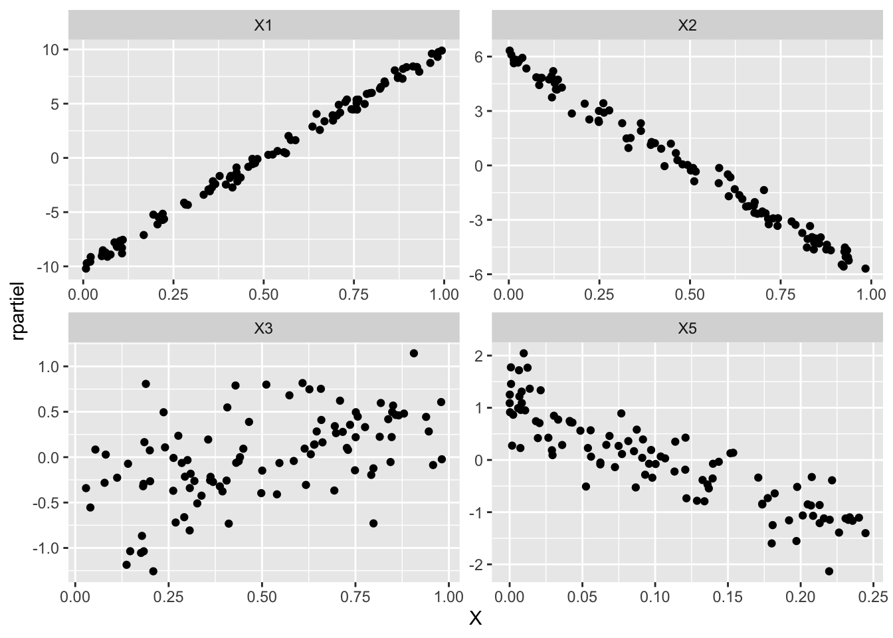
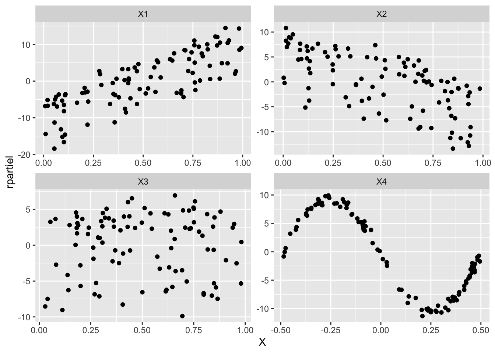

3 Validation du modèle
Exercice 1 (Questions de cours) C si \(\mathbf{1}\) fait partie des variables ou si \(\mathbf{1} \in \Im(X)\), A, C, C, A.
Exercice 2 (Propriétés d’une matrice de projection) La trace d’un projecteur vaut la dimension de l’espace sur lequel s’effectue la projection, donc \(\mathop{\mathrm{tr}}(P_X)=p\). Le second point découle de la propriété \(P^2=P\).
Les matrices \(P_X\) et \(P_XP_X\) sont égales, nous avons que \((P_X)_{ii}\) vaut \((P_XP_X)_{ii}\). Cela s’écrit \[\begin{eqnarray*} h_{ii} &=& \sum_{k=1}^n h_{ik} h_{ki}\\ &=& h_{ii}^2 + \sum_{k=1, k \neq i}^n h_{ik}^2\\ h_{ii}(1-h_{ii}) &=& \sum_{k=1, k \neq i}^n h_{ik}^2. \end{eqnarray*}\] La dernière quantité de droite de l’égalité est positive et donc le troisième point est démontré. En nous servant de cet écriture les deux derniers points sont aussi démontrés.
Nous pouvons écrire \[\begin{eqnarray*} h_{ii}(1-h_{ii}) &=& h_{ij}^2 + \sum_{k=1, k \neq i ,j }^n h_{ik}^2. \end{eqnarray*}\] La quantité de gauche est maximum lorsque \(h_{ii}=0.5\) et vaut alors \(0.25\). Le quatrième point est démontré.
Exercice 3 (Lemme d’invertion matricielle) Commençons par effectuer les calculs en notant que la quantité \(u'M^{-1}v\) est un scalaire que nous noterons \(k\). Nous avons \[\begin{eqnarray*} \left(M+uv'\right)\left(M^{-1}-\frac{M^{-1}uv'M^{-1}}{1+u'M^{-1}v}\right) &=&MM^{-1}-\frac{MM^{-1}uv'M^{-1}}{1+k}+uv'M^{-1} -\frac{uv'M^{-1}uv'M^{-1}}{1+k}\\ &=&I+\frac{-uv'M^{-1}+uv'M^{-1}+kuv'M^{-1}-ukv'M^{-1}}{1+k}. \end{eqnarray*}\] Le résultat est démontré.
Exercice 4 (Résidus studentisés)
Il suffit d’utiliser la définition du produit matriciel et de la somme matricielle et d’identifier les 2 membres des égalités.
En utilisant maintenant l’égalité de l’exercice précédent sur les inverses, avec \(u=-x_i\) et \(v=x_i'\), nous avons \[\begin{eqnarray*} (X'_{(i)}X_{(i)})^{-1}=(X'X-x_{i}x_{i}')^{-1}=(X'X)^{-1}+ \frac{(X'X)^{-1}x_{i}x_{i}'(X'X)^{-1}} {1-x_{i}'(X'X)^{-1}x_{i}}.%\label{eq:hiieta} \end{eqnarray*}\] La définition de \(h_{ii}=x_{i}'(X'X)^{-1}x_{i}\) donne le résultat.
Calculons la prévision où \(\hat \beta_{(i)}\) est l’estimateur de \(\beta\) obtenu sans la \(i^e\) observation
\[\begin{eqnarray*} \hat y_i^p = x_{i}'\hat \beta_{(i)} &=& x_{i}' (X'_{(i)}X_{(i)})^{-1}X'_{(i)}Y_{(i)}\\ &=& x_{i}'\left[(X'X)^{-1} + \frac{(X'X)^{-1}x_{i}x_{i}'(X'X)^{-1}}{1-h_{ii}} \right]\left(X'Y-x_{i}'y_i\right)\\ &=& x_{i}' \hat \beta + \frac{h_{ii}}{1-h_{ii}}x_{i}' \hat \beta - h_{ii}y_i -\frac{h_{ii}^2}{1-h_{ii}}y_i\\ &=& \frac{1}{1-h_{ii}}\hat y_i - \frac{h_{ii}}{1-h_{ii}}y_i. \end{eqnarray*}\]
Ce dernier résultat donne \[\begin{eqnarray*} \hat \varepsilon_i = (1-h_{ii})(y_i-\hat y^p_i). \end{eqnarray*}\] Nous avons alors \[\begin{eqnarray*} t^*_i &=& \frac{\hat \varepsilon_i}{\hat \sigma_{(i)}\sqrt{1-h_{ii}}}\\ &=&\frac{\sqrt{(1-h_{ii})}(y_i - \hat y_i^p)}{\hat \sigma_{(i)}}. \end{eqnarray*}\] Pour terminer, remarquons qu’en multipliant l’égalité de la question 3 à gauche par \(x_{i}'\) et à droite par \(x_{i}\) \[\begin{eqnarray*} x_{i}'(X'_{(i)}X_{(i)})^{-1}x_{i} &=& h_{ii}+ \frac{h_{ii}^2}{1-h_{ii}}.\\ 1+x_{i}'(X'_{(i)}X_{(i)})^{-1}x_{i} &=& 1 +\frac{h_{ii}}{1-h_{ii}}=\frac{h_{ii}}{1-h_{ii}}. \end{eqnarray*}\]
Utilisons l’expression \[\begin{eqnarray*} t^*_i=\frac{y_i-\hat y_i^p } {\hat \sigma_{(i)}\sqrt{1+x_{i}'(X'_{(i)}X_{(i)})^{-1}x_{i}}}. \end{eqnarray*}\] Nous pouvons alors appliquer la preuve de la proposition 5.4 page 97, en constatant que la \(i^e\) observation est une nouvelle observation. Nous avons donc \(n-1\) observations pour estimer les paramètres, cela donne donc un Student à \(n-1-p\) paramètres.
Exercice 5 (Distance de Cook)
Nous reprenons une partie des calculs de l’exercice précédent : \[\begin{eqnarray*} \hat \beta_{(i)} &=& (X'_{(i)}X_{(i)})^{-1}X'_{(i)}Y_{(i)}\\ &=& (X'X)^{-1}[X'Y-x_{i}y_i]+\frac{1}{1-h_{ii}} (X'X)^{-1}x_{i}x_{i}'(X'X)^{-1}[X'Y-x_{i}y_i]\\ &=& \hat \beta - (X'X)^{-1}x_{i}y_i + \frac{1}{1-h_{ii}} (X'X)^{-1}x_{i}x_{i}'\hat \beta - \frac{h_{ii}}{1-h_{ii}} (X'X)^{-1}x_{i}y_i, \end{eqnarray*}\] d’où le résultat.
Pour obtenir la seconde écriture de la distance de Cook, nous écrivons d’abord que \[\begin{eqnarray*} \hat \beta_{(i)} - \hat \beta = \frac{- \hat \varepsilon_i}{1-h_{ii}} (X'X)^{-1}x_{i}. \end{eqnarray*}\] Puis nous développons \[\begin{eqnarray*} C_i &=& \frac{1}{p \hat \sigma^2}(\hat \beta_{[i]}-\hat \beta)' X'X(\hat \beta_{(i)}-\hat \beta)\\ &=& \frac{1}{p \hat \sigma^2} \left(\frac{- \hat \varepsilon_i}{1-h_{ii}}\right)^2 x_{i}' (X'X)^{-1}(X'X)(X'X)^{-1}x_{i}. \end{eqnarray*}\] Le résultat est démontré.
Exercice 6 (Régression partielle) Nous avons le modèle suivant : \[\begin{eqnarray*} P_{X_{\bar{j}}^\perp} Y&=&\beta_jP_{X_{\bar{j}}^\perp} X_j + \eta. \end{eqnarray*}\] L’estimateur des moindres carrés \(\tilde\beta_j\) issu de ce modèle vaut \[\begin{eqnarray*} \tilde \beta_j = (X'_j P_{X_{\bar{j}}^\perp} X_j)^{-1} X'_j P_{X_{\bar{j}}^\perp} Y. \end{eqnarray*}\] La projection de \(Y\) sur \(\Im(X_{\bar{j}})\) (i.e. la prévision par le modèle sans la variable \(X_j\)) peut s’écrire comme la projection \(Y\) sur \(\Im(X)\) qui est ensuite projetée sur \(\Im(X_{\bar{j}})\), puisque \(\Im(X_{\bar{j}})\subset \Im(X)\). Ceci s’écrit \[\begin{eqnarray*} P_{X_{\bar{j}}}Y&=&P_{X_{\bar{j}}}P_{X}Y=P_{X_{\bar{j}}}X\hat{\beta} =P_{X_{\bar{j}}}(X_{\bar{j}}\hat\beta_{\bar{j}}+\hat\beta_jX_j) =X_{\bar{j}}\hat\beta_{\bar{j}}+\hat\beta_jP_{X_{\bar{j}}}X_j, \end{eqnarray*}\] et donc \[\begin{eqnarray*} X_{\bar{j}}\hat\beta_{\bar{j}} = P_{X_{\bar{j}}} Y - \hat\beta_jP_{X_{\bar{j}}}X_j. \end{eqnarray*}\] Récrivons les résidus \[\begin{eqnarray*} \hat{\varepsilon}&=&P_{X^\perp} Y=Y-X\hat\beta =Y-X_{\bar{j}}\hat\beta_{\bar{j}}-\hat\beta_jX_j\nonumber\\ &=&Y-P_{X_{\bar{j}}}Y + \hat\beta_jP_{X_{\bar{j}}}X_j -\hat\beta_j X_j\nonumber\\ &=&(I-P_{X_{\bar{j}}})Y - \hat\beta_j(I-P_{X_{\bar{j}}})X_j\nonumber\\ &=&P_{X_{\bar{j}}^\perp} Y-\hat\beta_jP_{X_{\bar{j}}^\perp} X_j.%\label{eq:origine:residpartiel} \end{eqnarray*}\] En réordonnant cette dernière égalité, nous pouvons écrire \[\begin{eqnarray} P_{X_{\bar{j}}^\perp} Y&=&\hat\beta_jP_{X_{\bar{j}}^\perp} X_j+\hat{\varepsilon}.\nonumber \end{eqnarray}\] Nous avons alors \[\begin{eqnarray*} \tilde\beta_j &=& (X'_j P_{X_{\bar{j}}^\perp} X_j)^{-1} X'_j P_{X_{\bar{j}}^\perp} Y\\ &=& (X'_j P_{X_{\bar{j}}^\perp} X_j)^{-1} X'_j(\hat\beta_jP_{X_{\bar{j}}^\perp} X_j+\hat{\varepsilon})\\ &=& \hat\beta_j +(X'_j P_{X_{\bar{j}}^\perp} X_j)^{-1} X'_j\hat{\varepsilon}). \end{eqnarray*}\] Le produit scalaire \(X'_j\hat{\varepsilon} = \langle X_j,\hat{\varepsilon} \rangle\) est nul car les deux vecteurs appartiennent à des sous-espaces orthogonaux, d’où le résultat.
Exercice 7 (TP : Résidus partiels)
Importation
don <- read.table("../donnees/tprespartiel.dta", header=TRUE, sep=";")Estimation du modèle
mod <- lm(Y~X1+X2+X3+X4, data=don)Analyse des résidus partiels. Commençons par calculer les résidus partiels (matrice \(n\times p\))
rpartiel <- residuals(mod, type="partial")Créons un data-frame à 3 colonnes et \(np\) lignes: la colonne de nom de la variable (
X1répété \(n\) fois,X2répété \(n\) fois,X3répété \(n\) fois etX4répété \(n\) fois), les variablesX1,X2,X3etX4et les résidus partiels.noms <- rep(names(don)[1:4], each=nrow(don)) X <- as.vector(data.matrix(don[,1:4])) donlong <- cbind.data.frame(noms, X, rpartiel=as.vector(rpartiel))La représentation avec est donnée par
library(ggplot2) ggplot(donlong, aes(X, rpartiel)) + geom_point() + facet_wrap(vars(noms), scale="free")
Les 3 premières variables montrent des tendances linéaires (ou aucune pour la troisième) alors que la troisième semble montrer plutôt une tendance quadratique.
Refaisons le modèle avec
X5:don <- cbind.data.frame(don, X5=don$X4^{2}) mod2 <- lm(Y~X1+X2+X3+X5, data=don) rpartiel <- residuals(mod2, type="partial") noms <- rep(names(don)[c(1:3,6)], each=nrow(don)) X <- as.vector(data.matrix(don[,c(1:3,6)])) donlong2 <- cbind.data.frame(noms, X, rpartiel=as.vector(rpartiel)) ggplot(donlong2, aes(X, rpartiel)) + geom_point() + facet_wrap(vars(noms), scale="free")
et nous constatons que les résidus partiels sont tous à tendance linéaire. Les 2 modèles ayant le même nombre de variables nous pouvons les comparer via leur \(\mathop{\mathrm{R^2}}\) qui valent 0.986 et 0.9966. La seconde modélisation est la meilleure tant pour la qualité globale que pour l’analyse des résidus.
Avec le second jeu de données
donbis <- read.table("../donnees/tpbisrespartiel.dta", header=TRUE, sep=";") modbis <- lm(Y~X1+X2+X3+X4, data=donbis) rpartiel <- residuals(modbis, type="partial") noms <- rep(names(donbis)[1:4], each=nrow(donbis)) X <- as.vector(data.matrix(donbis[,1:4])) donlongbis <- cbind.data.frame(noms, X, rpartiel=as.vector(rpartiel)) ggplot(donlongbis, aes(X, rpartiel)) + geom_point() + facet_wrap(vars(noms), scale="free")
Nous voyons clairement une sinusoïde de type \(\sin(-2\pi X_4)\) sur le dernier graphique. Changeons
X4donbis <- cbind.data.frame(donbis, X5=sin(-2*pi*donbis$X4)) modbis2 <- lm(Y~X1+X2+X3+X5, data=donbis) rpartiel <- residuals(modbis2, type="partial") noms <- rep(names(donbis)[c(1:3,6)], each=nrow(donbis)) X <- as.vector(data.matrix(donbis[,c(1:3,6)])) donlongbis2 <- cbind.data.frame(noms, X, rpartiel=as.vector(rpartiel)) ggplot(donlongbis2, aes(X, rpartiel)) + geom_point() + facet_wrap(vars(noms), scale="free")
Les résidus partiels sont tous à tendance linéaire et donc corrects. La qualité globale analysée par \(\mathop{\mathrm{R^2}}\) augmente elle aussi de 0.8106 à 0.9985.